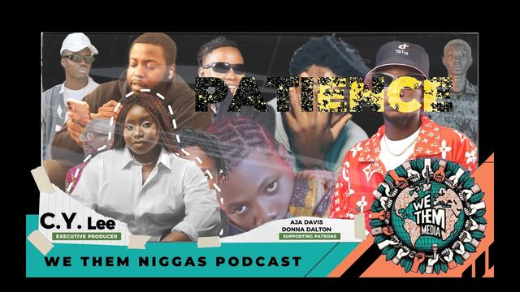
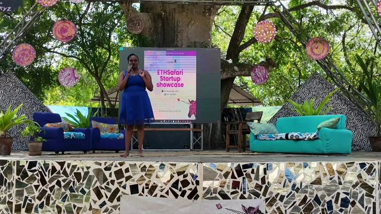
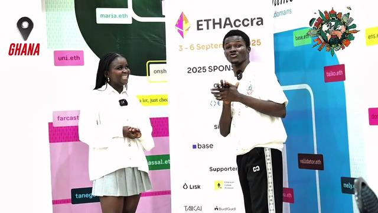
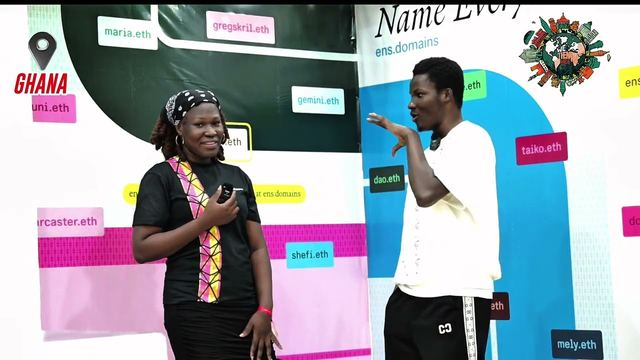
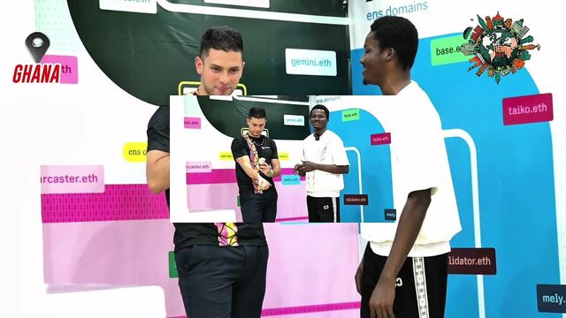
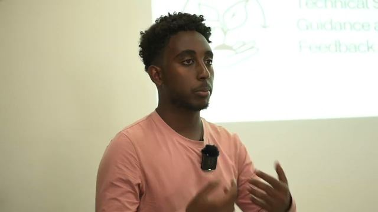

Pan-African Web3
Web3 as it is being built across Africa. Web3Bridge in Lagos, ETHAccra, ProdFest in Jos, the pop-up city in Ethiopia and the builders in Nairobi.
The same pieces, as a playlist on YouTube.
Browse the archive Projects · Where we filmed · Topics · Contributors · One question · The library
36 pieces on it.
 Length 3:58
Length 3:58
Nigeria · Abuja · 4 min
A Lisk ambassador on teams, equity and failing.
 Length 38:18
Length 38:18
Nigeria · Abuja · 38 min
Creative Alchemy, from the founder: Ánesi at Life Camp.
 Length 40:43
Length 40:43
Nigeria · Abuja · 41 min
Naira inflation, crypto activism and Africa’s future: Daniel.
 Length 2:02
Length 2:02
Nigeria · Nigeria · 2 min
Saving is burning money: Daniel on stablecoins and inflation.
 Length 1:14
Length 1:14
Nigeria · Nigeria · 1 min
Once you have a phone, you can enter Web3: Daniel.

Length 27:38
Nigeria · Abuja · 28 min
A fashion designer works out what a podcast is for.
 Length 30:41
Length 30:41
Nigeria · Abuja · 31 min
JED XO on Abuja, Creative Alchemy and purpose.
 Length 38:30
Length 38:30
Nigeria · Nigeria · 38 min
Sewing, battle rap and a grant that actually landed.
 Length 4:11
Length 4:11
Nigeria · Lagos · 4 min
An app that pays utility bills in crypto.
 Length 5:01
Length 5:01
Nigeria · Lagos · 5 min
A cohort member building against property fraud.
 Length 8:24
Length 8:24
Nigeria · Lagos · 8 min
A front-end developer who wanted to build, not consume.
 Length 6:02
Length 6:02
Nigeria · Lagos · 6 min
A cohort member on brotherhood and building on chain.
 Length 4:36
Length 4:36
Nigeria · Lagos · 5 min
Four months that took a Web2 developer apart.
 Length 5:44
Length 5:44
Nigeria · Lagos · 6 min
A Web3Bridge cohort member who forgot he had applied.
 Length 7:44
Length 7:44
Nigeria · Lagos · 8 min
A developer on what smart contracts are for.
 Length 12:07
Length 12:07
Nigeria · Jos · 12 min
The creative lead on branding, jargon and AI.
 Length 9:24
Length 9:24
Nigeria · Jos · 9 min
Awareness, action, and what is missing between builders.
 Length 6:17
Length 6:17
Nigeria · Jos · 6 min
A designer turned builder on winning with two people.
 Length 13:30
Length 13:30
Nigeria · Jos · 14 min
Why a first edition conference was built around products.

Length 45:52
2025
By Trade a Software Engineer, By Heart an Artist
 Length 12:31
Length 12:31
2025
A $4M Fund for African Web3 Founders | Live Stream
 Length 3:06:18
Length 3:06:18
Kilifi · 2025
ETH Safari Kilifi Final Day Live Stream

Length 2:38
Single dispatches · Accra · 3 min
The convener of ETHAccra on the third edition.

Length 1:42
Single dispatches · Accra · 2 min
Second place on her second hackathon.

Length 3:04
Single dispatches · Accra · 3 min
An African lover judging ETHAccra: Santiago.
 Length 2:15
Length 2:15
Ethiopia · Ethiopia · 2 min
Gloria on pop-up cities and web3.
 Length 10:14
Length 10:14
Ethiopia · Addis Ababa · 10 min
A Kenyan developer explains the chain from the ground up.
 Length 23:13
Length 23:13
Kenya · Nairobi · 23 min
A developer building digital IDs for people without papers.
 Length 4:08
Length 4:08
Ethiopia · Ethiopia · 4 min
A pitch for one place to find builders and money.
 Length 3:57
Length 3:57
Ethiopia · Ethiopia · 4 min
A pitch for credit that does not need a bank.

Length 3:06
Ethiopia · Ethiopia · 3 min
A pitch for a supply chain you can check.
 Length 1:46
Length 1:46
Kenya · Nairobi · 2 min
Chasing Mavericks CEO on crypto creators.
 Length 1:41
Length 1:41
Kenya · Nairobi · 2 min
Coffee on the blockchain. Project Mocha.
 Length 16:49
Length 16:49
Global Majority Hub, Bangkok · Bangkok · 17 min
Global Majority Hub: if you have a SIM card, you have a bank account.
 Length 9:39
Length 9:39
One Question · Lagos · 10 min
What is Ethereum? UNILAG street interviews.
 Length 1:40
Length 1:40
Kenya · Nairobi · 2 min
Bybit Kenya’s dancing robot.
1 more that touch on it.

Other topics
- Web3 Governance 18
- Blockchain Builders 33
- Crypto 44
- The Engaged Citizens 14
A piece can sit in two topics: first under the one it is mostly about, and again under one it touches on. Every piece keeps its place and its project.